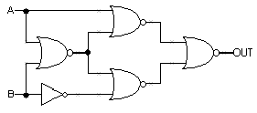
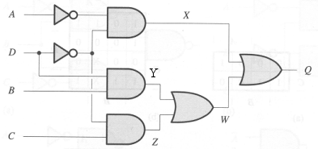
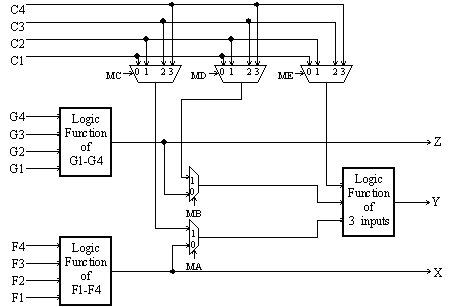

Problem 4.
Suppose we are building circuits using only the
following three components:
- inverter: tcd = 0.5ns, tpd = 1.0ns, tr = tf = 0.7ns
- 2-input NAND: tcd = 0.5ns, tpd = 2.0ns, tr = tf = 1.2ns
- 2-input NOR: tcd = 0.5ns, tpd = 2.0ns, tr = tf = 1.2ns
Consider the following circuit constructed from an inverter
and four 2-input NOR gates:

-
 What is tPD for this circuit?
What is tPD for this circuit?
-
What is tCD for this circuit?
-
What is the output rise time for this circuit?
-
What is tPD of the fastest equivalent
circuit (i.e., one that implements the same function)
built using only the three components listed above?
Problem 5.
Suppose that each component in the circuit below has a
propagation delay (tpd) of 10ns, a contamination delay (tcd)
of 1ns, and negligable rise and fall times. Suppose initially
that all four inputs are 1 for a long time and then the input D
changes to 0.

-
Draw a waveform plot showing how X, Y, Z, W and
Q change with time after the input transition on D. First assume
that the gates are not lenient. How will the waveforms
change if the gates are lenient?
Problem 7.
The Xilinx 4000 series field-programmable gate array (FPGA) can be
programmed to emulate a circuit made up of many thousands of gates;
for example, the XC4025E can emulate circuits with up to 25,000 gates.
The heart of the FPGA architecture is a configurable logic block (CLB)
which has a combinational logic subsection with the following circuit
diagram:

There are two 4-input function generators and one 3-input function
generator, each capable of implementing an arbitrary Boolean function
of its inputs.
The function generators are actually small 16-by-1 and 8-by-1
memories that are used as lookup tables; when the Xilinx device is
"programmed" these memories are filled with the appropriate values so
that each generator produces the desired outputs. The multiplexer
select signals (labeled "Mx" in the diagram) are also set by the
programming process to configure the CLB. After programming, these Mx
signals remain constant during CLB operation.
The following is a list of the possible configurations. For each
configuration indicate how each the control signals should be
programmed, which of the input lines (C1-C4, F1-F4, and G1-G4) are
used, and what output lines (X, Y, or Z) the result(s) appear on.
-
An arbitrary function F of up to four input variables, plus another
arbitrary function G of up to four unrelated input variables, plus a
third arbitrary function H of up to three unrelated input variables.
-
An arbitrary single function of five variables.
-
An arbitrary function of four variables together with some functions
of six variables. Characterize the functions of six variables that
can be implemented.
-
Some functions of up to nine variables. Characterize the functions of
up to nine variables that can be implemented.
-
[Optional challenge] Can every function of six inputs be implemented?
If so, explain how. If not, give a 6-input function and explain why
it can't be implemented in the CLB.